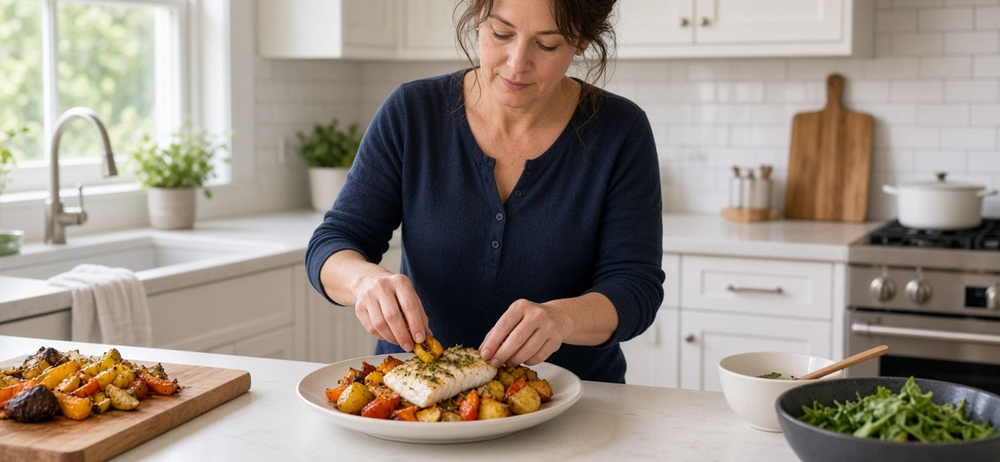
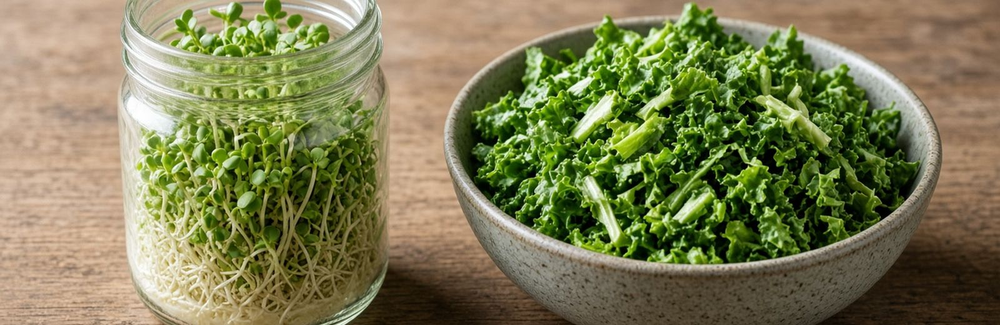

Breast Cancer Beyond Genetics · Part Twelve
Where To Start
All of it, ordered by how much it gives you back for what it costs you.
Do not attempt this list at once. Pick the first thing. When it stops requiring thought, take the next. A woman who does six of these is far better off than one who reads all thirty and does none.

Start This Week
Start This Month

Start This Season
Before Your Next Appointment
If You Only Do Five Things
Because thirty is a lot, and starting matters more than completeness.
- Thirteen hours overnight without eating.
- Walk most days; lift twice a week.
- Stop drinking alcohol.
- Nothing heated in plastic. Nothing from cans.
- Broccoli sprouts daily, cruciferous vegetables with meals.
Those five touch insulin, mitochondria, estrogen clearance, chemical exposure, and DNA repair — every major mechanism in this book. None of them costs money. Four of them cost no extra time.
What None Of This Requires
Perfection. Every item on this list works in proportion. Nobody does all thirty every day, and nobody needs to.
You are not trying to eliminate risk. That is not available to anyone, and a book that promised it would be lying to you.
You are changing the conditions — steadily, imperfectly, over years — in the direction they respond to.
The Thing Worth Remembering
You did not build the environment that made the other two-thirds harder to manage. You did not choose the chemicals, the food supply, or the silence around all of this. None of that was your doing, and none of it is your fault.
But you are the one holding the list now.
Every mechanism in this book — the mitochondria, the insulin, the estrogen doors, the immune cells, the repair systems — responds to what you do next. Not perfectly. Not with guarantees. Measurably.
That is what you were never told. Now you have it.